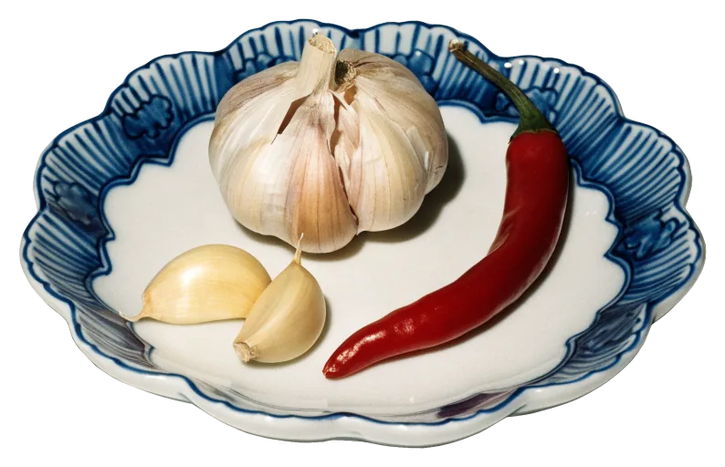
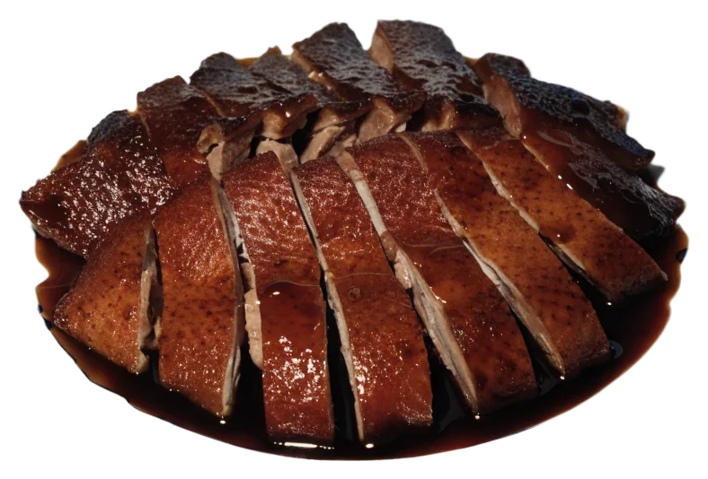

Wan-Tan-Suppe
Die Suppe vorneweg, mittags wie abends.
Gedeckt wird täglich – zweimal.
Chinesische und malaysische Gerichte an der Frohmestraße 7 in Schnelsen. Jeden Tag 12–15 Uhr und 17:30–21 Uhr, auch zum Mitnehmen.

 Foto: Martin Westendorff · Google Maps
Foto: Martin Westendorff · Google Maps
Auf der Karte stehen chinesische und malaysische Gerichte, auch vegetarische. Mittags gibt es Mittagstisch, abends wird in Ruhe gegessen – drinnen, draußen oder zum Mitnehmen.

Wan-Tan in der weißen Schale, dazu der Porzellanlöffel – so fängt das Essen im Ho mittags wie abends an. Im Gastraum liegen weinrote Decken unter Glas, dazu Aquarium und Schiffsmodell.
Tisch reservieren: 040 5504454 oder online anfragen.
Mittagstisch von 12 bis 15 Uhr, Abendessen von 17:30 bis 21 Uhr. Auch sonntags. Die blaue Linie zeigt, wie spät es gerade ist.
Sieben Gerichte, die man im Ho kennt. Bestellen am Tisch oder zum Mitnehmen unter 040 5504454.
Die Suppe vorneweg, mittags wie abends.

Mit Knoblauch, scharf.

Vom Mittagstisch.
Mit Zwiebeln.
Mit Hähnchen und Gemüse.
Und Pilzen, auf Reis.
Mit Vanilleeis.
Die vollständige Karte gibt es im Lokal und am Telefon: 040 5504454.
22457 Hamburg-Schnelsen
Eckhaus mit rundem Flachdach und roter Markise, Eingang an der Ecke unter dem roten Schild »china Restaurant Schnelsen«.
Von Gästen fotografiert, so wie es kommt.

Rindfleisch mit Zwiebeln auf blau-weißem Porzellan. Bestellen am Tisch oder zum Mitnehmen: 040 5504454.


Anfrage in drei kurzen Schritten: Tag und Uhrzeit, Personen, Ihre Angaben. Wer es eilig hat, ruft an: 040 5504454.
4,6876 Bewertungen auf GoogleFoto: Martin Westendorff · Google Maps
Frohmestraße 7 in Hamburg. Zum Bleiben oder zum Mitnehmen, mittags und abends.